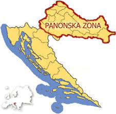

About Me
Before we get into the more intresting parts of this website I feel like its important
to give a little intorduction about myself and to explain why I wanted to do this.
My name is Matija Bebek and currently I am fourth year student at Loyola University studying computer
science. Outside of my studies I also can say that I have another passion and that is learning
the history of my people and learning Croatian Foklore Dances. You can actually a picture with my Croatian
Folklore attire as well as my Croatian intstrument I play called a bisernica
Why
One of the main reasons I wanted to do this was because as I started to see my intrest in both
thing regarding tech as well as seeking intrest regarding something from my past I wanted to see if there
was a way where I can bring the two things I love togethor. So I decided to make and information website about
the four regions of Croatian Foklore. One of the other reasons I also wanted to do this is I saw that there werent
really many websites that explained these four regions certianly not in English but as well as not in Croatian as well
so I thought that if I could make something that it would be easy accesible but also when I am still retaining knowladge of both tech
and folkore I can still add more in the future.

Dances
Looking at this region we can really see the wonders that this area of foklore provides. Throught history
it has been known as one of the most energetic regions when we look at the other three there are so many dances from different areas of Croatia
that are from this zone. We have dances from Moslavina, Posavina, as well as Turopolje. We also see other area that are from
Novogradiskog kraja and pozeske kotlin, and we even learn of dances from Croatians that lived in Hungary that sort used inspiration from hungarian culture
dances to there own.
Tambura
Its not just the dances that are known to be vibrant but we also have seen the intrument side as well with all the songs being full
of energy as well having so many different intruments togethor being able to bring so many sounds togehtor to make it into one song that our ancestors used
are just incredible. There are also the many names of the songs associtated with this region we have song like Turopoljski drmes, Lipo ti je, repa, and staro sito.
Just becuase we have song associated with dances that dosn't mean that there are orkestra pieces associated with this zone and one of the songs we saw
was called Lipo ti je which really brings out the energy of this specific zone.
Posavina
Lipo ti je